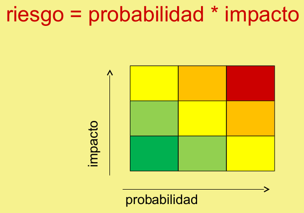

En la carrera
En la carrera
En la industria
¿Que buscamos con la seguridad?
¿Que buscamos con la seguridad?
Seguridad como requisito no funcional
¿Que buscamos con la seguridad?
Seguridad como requisito no funcional
Riesgos - Acciones Maliciosas
Riesgos - Acciones posibles
Evitarlo
Mitigarlo
Transferirlo
Aceptarlo
Confidencialidad
Integridad
Availability (Disponibilidad)
Confidencialidad
Integridad
Availability (Disponibilidad)
Confidencialidad
Integridad
Availability (Disponibilidad)
C.I.A
Autenticación
Autorización
Privacidad
Anonimato
No Repudio
Auditoria
Regla de la Cadena
Complejidad (Legal y Técnica)
Heterogeneidad de plataformas
Medición
Costos
Nuevas amenazas
Modelado de amenazas
Evaluación de riesgos
Conocer los ataques
Black Hat
White Hat
Ciclo de Trabajo
Protección total no existe.
Si no se va a reaccionar, no tiene sentido detectar tampoco.
Compromiso con:
Medidas Invisibles
Ejemplo: Redirect http -> https en vez de poner link
Jefe Irritable
Usuarios saltean medidas para seguir con sus trabajos
Debe evaluarse nivel de seguridad segun necesidad de organización
Algo que es inseguro pero de acceso muy dificil o desconocido
Algo que es inseguro pero de acceso muy dificil o desconocido
¿Entonces es seguro o invulnerable?
Algo que es inseguro pero de acceso muy dificil o desconocido
¿Entonces es seguro o invulnerable?
FALSO
Se busca la seguridad por diseño, no por oscuridad
Se busca la seguridad por diseño, no por oscuridad
Ejemplo: Página de Login bien conocida, pero buena politica de Autenticación
Se busca la seguridad por diseño, no por oscuridad
Ejemplo: Página de Login bien conocida, pero buena politica de Autenticación
Otro Ejemplo: Los algoritmos de encriptación son raros y no los entiendo, voy a hacer el mio.
Se busca la seguridad por diseño, no por oscuridad
Uno puede "oscurecer" tanto como le da su "inteligencia"
Se busca la seguridad por diseño, no por oscuridad
Uno puede "oscurecer" tanto como le da su "inteligencia"
Ejemplo: Esconder plata en la casa
Seguridad + Oscuridad suelen ser buenas combinaciones
Seguridad + Oscuridad suelen ser buenas combinaciones
Ejemplo: Contraseña
No resuelve todos los problemas de seguridad
No resuelve todos los problemas de seguridad
De ser posible, implementar con estandares
¿Cual algoritmo usar?
Van cambiando
Se van haciendo vulnerables
Lo ideal es leer del tema cada tanto, mantenerse actualizado
En general, los lenguajes modernos prestan atención y sus librerias populares
Como concepto, claves mas largas implican mejor seguridad (RSA 4096 >> 1024)
Explota el factor humano
El Humano es vulnerable: Confianza excesiva, miedo, desconocimiento.
Engaño o manipulación para obtener acceso o Información
Mitigación:
No se puede "comprar" la seguridad
Intervención de factores humanos, técnicos, etc...
Actualizaciones de plataformas
La seguridad se tiene que pensar en todas las fases del ciclo de vida
Es dificil y requiere experiencia
Es un proceso
No es una capa al final del desarrollo
Desarrollo seguro es solo una parte
Mitnick, K. D., & Simon, W. L. (2011). *The art of deception: Controlling the human element of security*. John Wiley & Sons.
Tori, C. (2008). *Hacking ético*.
Viega, J., & McGraw, G. R. (2001). *Building secure software: how to avoid security problems the right way*. Pearson Education.